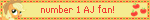
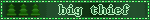
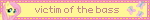

blinkies are 150x20 pixel graphics that feature interests or
little quips! they're super fun to make and super duper fun to collect
most of these aren't made by me - but some are :P





stamps are similar to blinkies but their dimensions are 60x100 pixels
there are also so many other variations of cute gif decorations! like user boxes, dividers,
and buttons - cool stuff